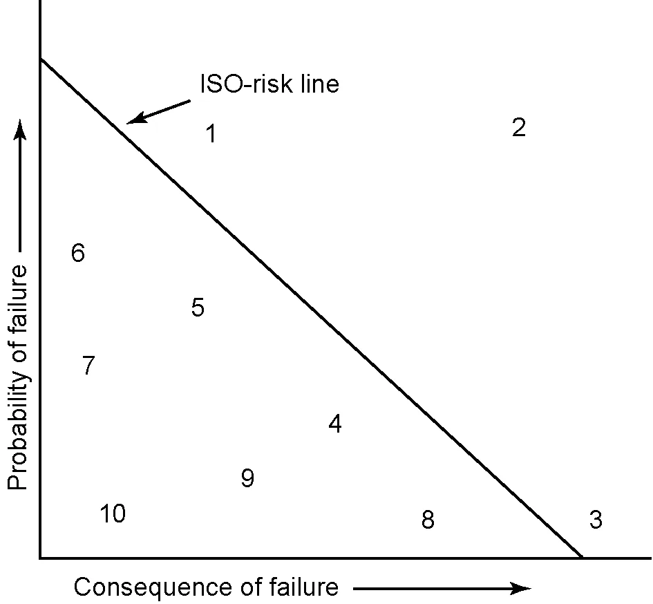
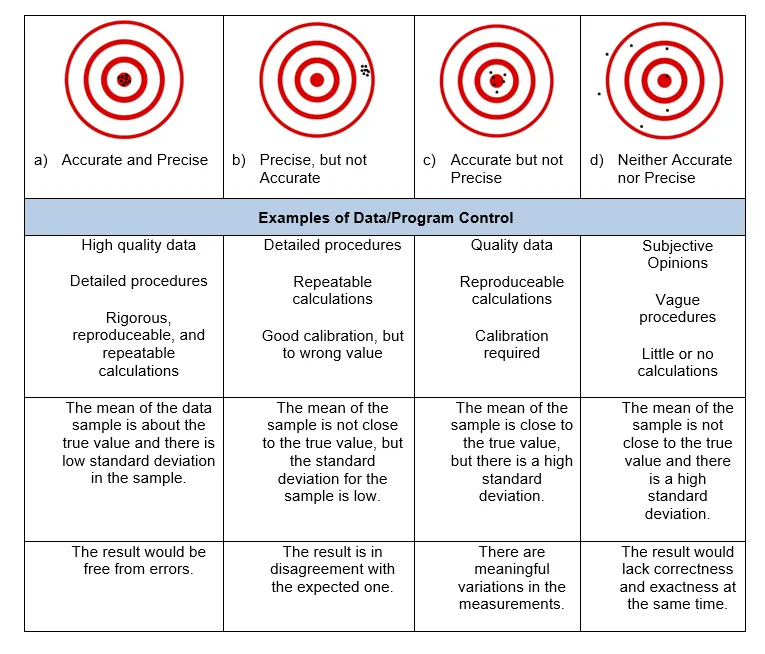
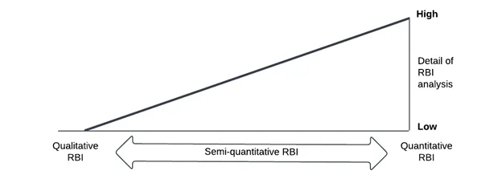
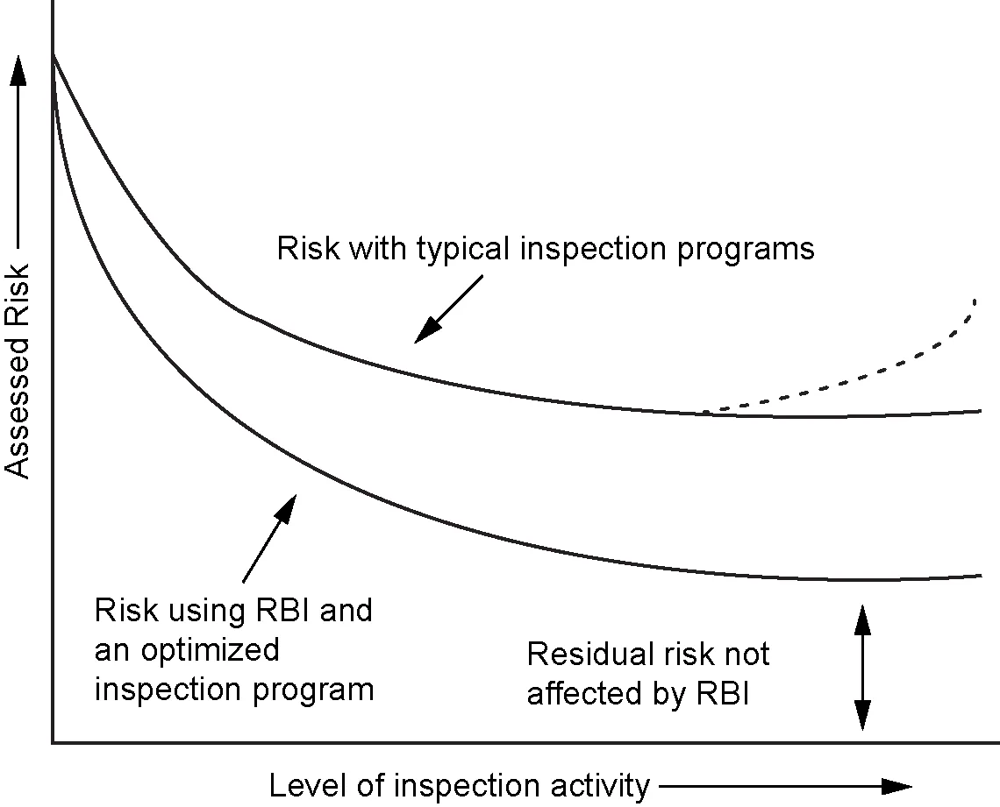
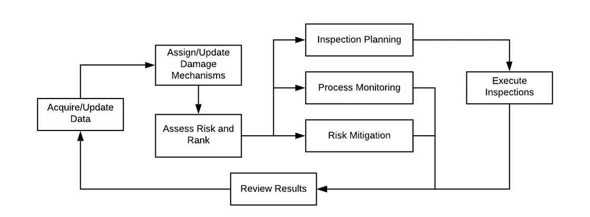
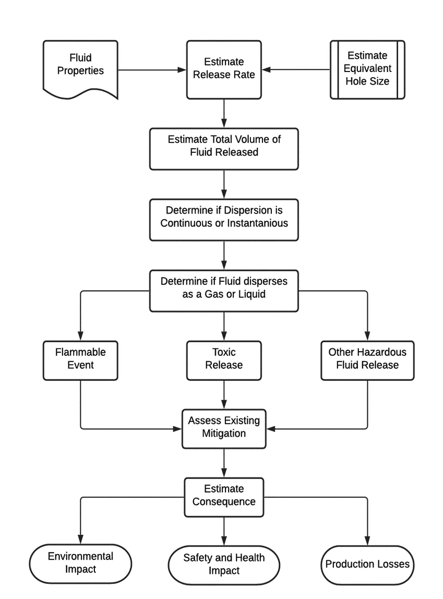
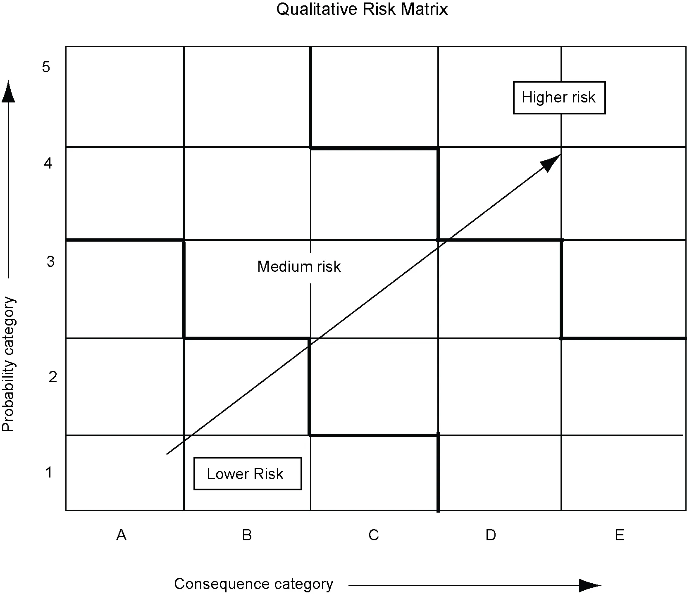
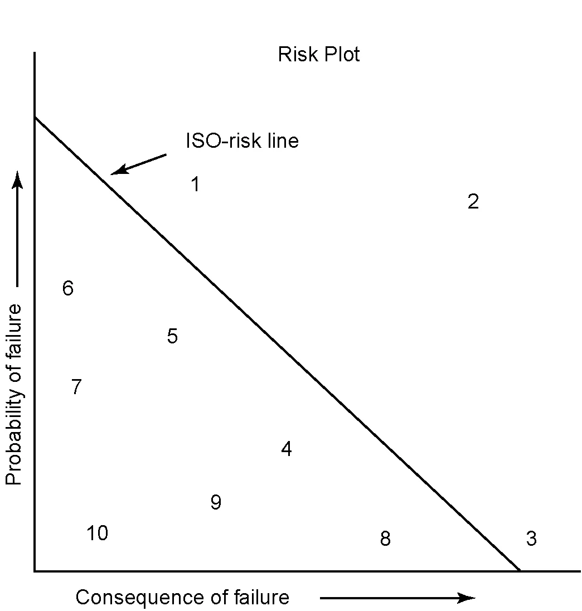
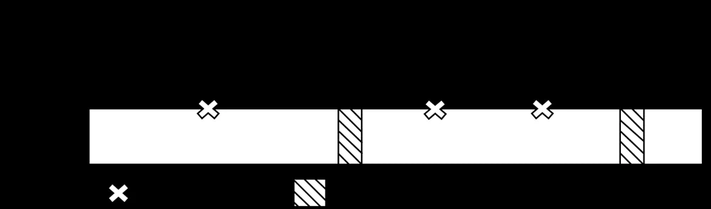

Section 1
Scope
API RP 580
Executive Summary: API RP 580 provides the foundational framework and essential minimum requirements for developing, implementing, and sustaining a valid Risk-Based Inspection (RBI) program for fixed equipment in refining, petrochemical, and chemical process industries.
| Clause | Requirement | Detailed Guidance & Engineering Methodology | Key Considerations & Scope Boundaries |
|---|---|---|---|
| 1.1 Industry Scope | Should | Specifies the application of RBI primarily to the hydrocarbon and chemical process industries, including oil and gas production, refining, petrochemical, and chemical manufacturing. Can be adapted for other continuous process industries handling hazardous materials. | Focuses on plants containing pressurized systems where loss of containment presents safety, health, environmental, or business interruption consequences. |
| 1.2 Purpose | Shall | Provides owner-operators with the core elements for developing an RBI program to:
|
Mandatory Principle: An RBI program must be a continuous improvement cycle (plan-do-check-act), not a one-time static calculation. |
| 1.3 Flexibility in Application | May | Permits flexibility across the spectrum of assessment methodologies:
|
Users may apply different methods to different units or equipment within the same facility depending on hazard level and available data. |
| 1.4 Mechanical Integrity Focused | Shall | Strictly covers pressure boundary integrity for fixed equipment:
|
Exclusions: Does NOT replace structural steel, electrical, or instrument safety systems (SIS) integrity programs, though RBI outputs can interface with them. |
| 1.5 Target Audience | Should | Written for owner-operator personnel responsible for mechanical integrity: inspection engineers, corrosion specialists, plant engineers, operations/maintenance leadership, and risk practitioners. | Promotes cross-functional collaboration rather than isolated inspection department execution. |
| 1.6 Benefits & Limitations | Key for Success | Benefits:
|
Requires active management commitment and rigorous adherence to Management of Change (MOC). |
Section 2
Normative References
API RP 580
Normative Framework: API RP 580 relies directly upon companion codes and standards. An RBI program cannot function in isolation; it operates under the overarching governance of post-construction inspection codes (API 510, 570, 653) and damage mechanism references (API 571).
| Standard / Code | Title / Scope | Role in API RP 580 RBI Implementation |
|---|---|---|
| API 510 | Pressure Vessel Inspection Code: Maintenance Inspection, Rating, Repair, and Alteration | Governs RBI applications for pressure vessels. Mandates maximum inspection interval extensions based on formal RBI assessment results. |
| API 570 | Piping Inspection Code: In-service Inspection, Rating, Repair, and Alteration of Piping Systems | Governs RBI applications for process piping circuits. Establishes requirements for CUI, injection points, and deadlegs. |
| API 653 | Tank Inspection, Repair, Alteration, and Reconstruction | Governs RBI applications for aboveground storage tanks (ASTs). Provides rules for establishing bottom and shell inspection intervals via RBI. |
| API RP 571 | Damage Mechanisms Affecting Fixed Equipment in the Refining Industry | Prerequisite Reference: Essential catalog used during the Damage Mechanism Review (DMR) to identify all active and potential degradation modes. |
| API 579-1 / ASME FFS-1 | Fitness-For-Service | Provides quantitative engineering evaluations of identified flaws, localized thinning, and cracks to evaluate remaining structural integrity. |
| API RP 581 | Risk-Based Inspection Methodology | The detailed, fully quantitative computational engineering model for POF, COF, and financial risk calculation. (RP 580 defines the "What/Rules", RP 581 provides "One Quantitative How"). |
| API RP 584 | Integrity Operating Windows (IOWs) | Defines process variable boundary limits (temperature, velocity, contaminants) required to keep damage mechanisms within modeled RBI rates. |
| ASME BPVC Section VIII | Rules for Construction of Pressure Vessels (Divisions 1 and 2) | Baseline design codes establishing allowable stresses, joint efficiencies, and minimum required wall thickness calculations. |
| ASME B31.3 | Process Piping | Baseline design and construction standard for industrial chemical and refinery piping circuits. |
Section 3
Terms, Definitions, Acronyms, and Abbreviations
API RP 580
Complete Engineering Glossary: Section 3 establishes the exact terminology required for technical compliance and communication across multidisciplinary RBI teams. Below is the complete catalog of all 67 defined terms and official acronyms.
Section 3.1 Complete Terms & Definitions Catalog (67 Terms)
| Term | API RP 580 Official Definition | Engineering Context & Application |
|---|---|---|
| 3.1.1 absolute risk | An ideal and accurate description and quantification of risk. | Theoretical risk value. Real assessments generally yield relative risk rankings or calculated approximations. |
| 3.1.2 acceptable risk | A level of risk that is acceptable to the owner-operator. | Defined by corporate risk criteria; sets the threshold above which mitigation is mandatory. |
| 3.1.3 ALARP (as low as reasonably practicable) | A concept that states that risk should be reduced to a level that is as low as reasonably practicable, where the cost of further reduction is disproportionate to the risk reduction achieved. | Foundation for risk mitigation decisions in high-hazard operations. |
| 3.1.4 components | Parts that make up a piece of equipment or equipment item (e.g. shells, heads, nozzles, skirts, trays). | RBI is often evaluated at the component level to establish targeted NDE. |
| 3.1.5 consequence | An outcome from an event (usually negative for risk assessments). | Can include safety, health, environmental, and financial/business impacts. |
| 3.1.6 consequence of failure (COF) | The consequence of an event, generally associated with loss of containment of fluids. | One of the two core axes of risk ($Risk = POF \times COF$). |
| 3.1.7 damage factor | A factor that modifies the generic failure frequency to account for damage mechanisms and inspection history. | Quantitative metric used in API 581 to scale generic failure frequencies. |
| 3.1.8 damage mechanism | A process that induces micro- and/or macro-material changes over time that are harmful to the material's mechanical properties and/or condition. | Identified during DMR (e.g., sulfidation, CUI, wet H2S cracking, erosion). |
| 3.1.9 damage mechanism review (DMR) | A process of identifying the credible damage mechanisms and their expected rates of deterioration. | Mandatory prerequisite phase of every valid RBI assessment. |
| 3.1.10 damage mode | The physical manifestation of damage (e.g., wall thinning, pitting, cracking, blistering). | Determines which NDE inspection technique is capable of detection. |
| 3.1.11 damage rate | The speed or pace at which damage is occurring (e.g. corrosion rate in mils per year). | Critical input for estimating remaining life and calculating POF. |
| 3.1.12 deterioration | The reduction of equipment ability to withstand operating conditions, usually via corrosion or cracking. | General degradation of pressure-retaining material. |
| 3.1.13 due date | The date by which an inspection should be performed according to the RBI plan. | Driven by the point in time when risk reaches the owner-operator's acceptable threshold. |
| 3.1.14 equipment item | An individual piece of equipment, such as a pressure vessel, heat exchanger, pump, or tank. | The asset tracked within the computerized maintenance management system (CMMS). |
| 3.1.15 event tree | A graphical logic model that traces the progression of initial events to outcomes. | Used in quantitative COF to evaluate release outcomes (fire, explosion, toxic cloud). |
| 3.1.16 external mechanism | A damage mechanism that occurs on the outside surface of equipment (e.g. CUI, atmospheric corrosion). | Managed through external visual, pulsed eddy current, or thermal imaging inspections. |
| 3.1.17 failure | The termination of the ability of an equipment item to perform its required function. | In RBI, primarily focused on loss of containment of process fluids. |
| 3.1.18 failure mode | The manner of failure (e.g. pinhole leak, small crack, major tear, catastrophic rupture). | Directly impacts the release rate and consequence magnitude. |
| 3.1.19 fitness-for-service (FFS) | A quantitative engineering evaluation to determine whether in-service equipment containing flaws is fit for continued operation. | Conducted in accordance with API 579-1/ASME FFS-1 when severe damage is found. |
| 3.1.20 hazard | A physical condition or a release of energy that has the potential to cause injury or damage. | Inherent property of the process chemicals, pressures, and temperatures. |
| 3.1.21 inspection | Activities including measuring, testing, examining, or gauging characteristics of equipment and comparing with requirements. | Primary tool for managing risk by reducing uncertainty in POF. |
| 3.1.22 inspection effectiveness | The degree to which an inspection technique can detect and quantify damage. | Categorized from Highly Effective (A) down to Ineffective (E). |
| 3.1.23 inspection plan | A documented set of inspection actions, scopes, techniques, locations, and intervals. | The actionable deliverable resulting from the RBI process. |
| 3.1.24 integrity operating window (IOW) | Established limits for process parameters that could affect the integrity of the equipment. | Governed by API 584; critical to prevent unmonitored acceleration of damage rates. |
| 3.1.25 internal mechanism | A damage mechanism occurring on the inside surfaces exposed to process fluids. | Requires internal entry or specialized intrusive/non-intrusive NDE. |
| 3.1.26 management of change (MOC) | A documented management system process for reviewing and approving changes to process, metallurgy, or operation. | Primary trigger for unscheduled RBI assessment updates. |
| 3.1.27 mitigation | Limitation of any negative consequence or reduction in probability of a particular event. | Includes inspection, metallurgy upgrades, chemical injection, and emergency isolation. |
| 3.1.28 physical boundary | The defined limits of the equipment and systems included in the RBI assessment. | Battery limits established during the planning phase. |
| 3.1.29 piping circuit | A subsection of piping that has common design, metallurgy, and operating conditions. | The discrete unit of analysis for piping RBI assessments. |
| 3.1.30 probability of failure (POF) | The likelihood or frequency of an equipment item failing within a given time interval. | Calculated annually or for specific inspection cycles. |
| 3.1.31 qualitative risk assessment | A risk assessment method based on subjective scoring, categorical ranges, and engineering judgment. | Fast and effective for screening and low-complexity systems. |
| 3.1.32 quantitative risk assessment (QRA) | A methodology that produces numerical estimates of risk based on detailed failure rates and physics models. | Highly detailed; used for high-consequence critical systems. |
| 3.1.33 reassessment | An update or re-evaluation of an existing RBI assessment based on new data. | Can be a periodic update or a full formal revalidation. |
| 3.1.34 relative risk | The risk of an equipment item compared with other items within the same plant or population. | Standard output for ranking and prioritization. |
| 3.1.35 residual risk | The remaining risk after risk reduction and mitigation measures have been implemented. | Acknowledges that zero risk is unattainable in process facilities. |
| 3.1.36 risk | Combination of the probability of an event and its consequence ($Risk = POF \times COF$). | The core metric used to prioritize inspection resources. |
| 3.1.37 risk analysis | Systematic use of information to identify hazards and estimate risk. | Technical calculation stage of RBI. |
| 3.1.38 risk assessment | Overall process comprising risk identification, risk analysis, and risk evaluation. | The full evaluation process within the RBI framework. |
| 3.1.39 risk avoidance | Decision not to become involved in, or action to withdraw from, a risk situation. | e.g., Decommissioning obsolete high-risk equipment. |
| 3.1.40 risk criteria | Terms of reference against which the significance of a risk is evaluated. | Corporate thresholds defining High, Medium, Low risk limits. |
| 3.1.41 risk driver | An input parameter or damage mechanism that has a dominant effect on calculated risk. | Identified through sensitivity analysis to focus mitigation. |
| 3.1.42 risk evaluation | Process of comparing estimated risk against given risk criteria to determine significance. | Deciding whether risk is acceptable or requires action. |
| 3.1.43 risk management | Coordinated activities to direct and control an organization with regard to risk. | The overarching governance system implementing RBI plans. |
| 3.1.44 risk matrix | A tool for ranking and displaying risk by defining ranges for POF and COF. | Visual 5x5 or 3x3 grid used for communication and prioritization. |
| 3.1.45 risk plot | A graph displaying risk as a function of POF and COF (often logarithmic). | Visualizes iso-risk curves and quantitative risk distributions. |
| 3.1.46 risk reduction | Actions taken to lessen the probability, negative consequence, or both associated with a risk. | Core objective of inspection and engineering mitigations. |
| 3.1.47 risk tolerance | Organization's readiness to bear the risk after risk treatment. | Upper boundary of acceptable risk. |
| 3.1.48 semi-quantitative risk assessment | An assessment method that combines aspects of qualitative and quantitative approaches. | Uses discrete category scores derived from structured numerical rules. |
| 3.1.49 sensitivity analysis | A method to determine how different values of an independent variable affect a dependent variable. | Used to assess robustness and identify critical input variables. |
| 3.1.50 source of risk | Element which alone or in combination has the intrinsic potential to give rise to risk. | Process chemicals, high pressures, temperature extremes, toxic inventories. |
| 3.1.51 susceptibility | The probability or likelihood of equipment experiencing a specific damage mechanism. | Evaluated based on metallurgy and chemical environment. |
| 3.1.52 toxic substance | Chemical substance that can cause injury or death upon inhalation, ingestion, or absorption. | Drives high consequence areas in COF dispersion modeling. |
| 3.1.53 turnaround (TAR) | Planned periodic shutdown of a processing unit for major inspection, overhaul, and repair. | RBI heavily optimizes TAR work scope by screening out unnecessary intrusive exams. |
| 3.1.54 uncertainty | A lack of information or understanding regarding the occurrence or magnitude of an event. | Fundamental Concept: Inspection reduces uncertainty in POF. |
| 3.1.55 unmitigated risk | Risk prior to the implementation of inspection or mitigation activities. | Baseline risk reflecting passive deterioration over time. |
| 3.1.56 user | An owner-operator organization exercising control over facility mechanical integrity. | Ultimate responsibility holder for RBI program compliance. |
Section 3.2 Official Acronyms & Abbreviations Catalog
| Acronym | Expanded Meaning | Engineering Discipline / Standard Domain |
|---|---|---|
| ACC | American Chemistry Council | Chemical Industry Organization |
| ALARP | As Low As Reasonably Practicable | Risk Management & Safety Governance |
| API | American Petroleum Institute | Industry Standards Organization |
| ASME | American Society of Mechanical Engineers | Design & Construction Codes (BPVC, B31.3) |
| BLEVE | Boiling Liquid Expanding Vapor Explosion | Process Safety & Consequence Modeling |
| CCPS | Center for Chemical Process Safety | Process Safety & Risk Criteria |
| COF | Consequence of Failure | Risk Calculation Axis |
| DMR | Damage Mechanism Review | Materials & Corrosion Assessment |
| EPA | Environmental Protection Agency | Regulatory Compliance & Spill Reporting |
| FFS | Fitness-For-Service | API 579 Flaw Evaluation |
| FMEA | Failure Modes and Effects Analysis | Reliability & Risk Analysis |
| HAZOP | Hazard and Operability Study | Process Hazard Analysis (PHA) |
| IOW | Integrity Operating Window | Process Envelope Monitoring (API 584) |
| LOPA | Layers of Protection Analysis | Semi-Quantitative Risk Assessment |
| MOC | Management of Change | PSM Process Governance |
| MSD | Materials Selection Diagram | Engineering Metallurgy Specification |
| NDE | Nondestructive Examination | Inspection Technologies (UT, RT, MT, PT) |
| OSHA | Occupational Safety and Health Administration | 29 CFR 1910.119 Process Safety Management |
| PASCC | Polythionic Acid Stress Corrosion Cracking | Austenitic Stainless Steel Damage (API 571) |
| PHA | Process Hazards Analysis | Systemic Plant Safety Review |
| PMI | Positive Material Identification | Quality Assurance & Alloy Verification |
| POF | Probability of Failure | Risk Calculation Axis |
| PSI | Process Safety Information | Engineering Design & Chemical Data |
| PSM | Process Safety Management | OSHA Regulatory Framework |
| PVRC | Pressure Vessel Research Council | Equipment Reliability Research |
| QA/QC | Quality Assurance / Quality Control | Fabrication, Repair & Inspection Quality |
| QRA | Quantitative Risk Assessment | Rigorous Probabilistic Modeling |
| RBI | Risk-Based Inspection | Risk-Prioritized Inspection Planning |
| RCM | Reliability Centered Maintenance | Maintenance Strategy Methodology |
| RMP | Risk Management Plan | EPA Environmental Risk Standard |
| SIL | Safety Integrity Level | Instrumented Protective Functions (IEC 61511) |
| UT | Ultrasonic Testing | Thickness & Flaw Detection Technique |
Section 4
Risk Assessment Concepts
API RP 580
Fundamental Risk Concepts: Risk is formally defined as the product of the probability of an event occurring during a time period of interest (POF) and the consequences associated with that event (COF).
| Clause | Requirement | Detailed Guidance & Engineering Methodology | Key Considerations & Scope Boundaries |
|---|---|---|---|
| 4.1 What is Risk? | Shall | Risk is defined as the mathematical product of the probability of an event occurring during a specified timeframe and the magnitude of the consequences:
Risk = Probability of Failure (POF) × Consequence of Failure (COF)
In pressurized process equipment, failure is generally characterized by a loss of containment (leak, tear, rupture), leading to safety, environmental, or economic losses. |
Risk space is two-dimensional. An item with very low POF but catastrophic COF can possess equivalent or greater risk than an item with high POF and negligible COF. |
| 4.2 Risk Management & Reduction | Should | Distinguishes between Risk Assessment (the analytical process of determining risk) and Risk Management (taking tangible actions to control or reduce risk).
|
Risk management decisions must balance risk reduction against economic and operational practicality (ALARP principle). |
| 4.3 Relative vs Absolute Risk | May | Relative Risk: Compares equipment items against one another within a plant population (e.g. equipment ranked 1 through 500). Most owner-operators utilize relative risk ranking for inspection prioritization.
Absolute Risk: Computes the discrete, numeric risk value (e.g., $1.2 \times 10^{-5}$ fatalities/year or $45,000/year expected loss). Used when comparing plant risk against corporate risk criteria or societal acceptance limits. |
Relative risk assessments require fewer absolute data inputs, whereas absolute risk models require rigorous failure rate databases and validated consequence modeling. |
Figure 1 — Risk Plot (Probability vs Consequence Representation)

Figure 1 Engineering Significance: The risk plot illustrates the two-dimensional nature of risk. Lines of constant risk (iso-risk contours) curve through the plot. Equipment items situated in the upper-right quadrant (High POF and High COF) represent critical plant assets that demand immediate inspection or mitigation. Items in the lower-left represent low-risk assets where inspection intervals can be extended safely.
Section 5
Introduction to Risk-Based Inspection
API RP 580
Evolution of Mechanical Integrity: Section 5 contrasts historical calendar-based inspection against modern risk-informed strategies, establishes the continuum of RBI methods, and illustrates how inspection reduces uncertainty to control risk.
| Clause | Requirement | Detailed Guidance & Engineering Methodology | Key Considerations & Scope Boundaries |
|---|---|---|---|
| 5.1 Evolution of Inspection Intervals | Should | Traces the transition of inspection planning across three distinct eras:
|
RBI enables plants to move inspection resources from low-risk equipment to high-risk circuits without sacrificing safety. |
| 5.2 COF and POF for RBI | Shall | Inspection Primarily Impacts POF: Inspection does NOT alter the chemical hazards, pressure, or volume stored (COF). Rather, inspection reduces uncertainty regarding the current physical condition and active damage rates, thereby controlling and reducing POF.
COF remains relatively static unless physical engineering changes (inventory reduction, isolation valves, blowdown) are enacted. |
Programs that attempt to reduce consequence scores through inspection alone violate the fundamental physical principles of RBI. |
| 5.3 Precision vs Accuracy | Key for Success | Differentiates between:
|
Refer to Figure 2 (dartboard analogy) and Table 1 for input variables influencing assessment accuracy. |
| 5.4 Types of RBI Assessment | Shall | Defines the continuum of RBI methods (see Figure 3):
|
Continuum Principle: These methods are complementary rather than competing. A plant can screen 5,000 circuits qualitatively, and then model the top 200 high-risk vessels quantitatively. |
| 5.5 Expected Outcomes of RBI | Shall | A valid RBI assessment shall generate three tangible engineering outcomes:
|
An RBI assessment that only produces a risk ranking without actionable inspection plans is incomplete and non-compliant with API RP 580. |
| 5.6 Using RBI for Risk Management | Should | Demonstrates how inspection mitigates risk over time (see Figure 4). Over time, without inspection, uncertainty accumulates and risk escalates. Performing an effective inspection resets the uncertainty and brings the calculated risk back below the acceptable threshold. | If damage is progressing too rapidly, inspection alone cannot keep risk below the threshold; engineering repair or replacement becomes mandatory. |
| 5.7 Continuous Improvement Tool | Should | Operates as a living closed-loop cycle:
Plan (develop RBI inspection plan) → Do (execute NDE inspection) → Check (evaluate as-found findings against predictions) → Act (update RBI model and adjust future intervals). |
Feeding as-found inspection findings back into the RBI database is mandatory to sustain model accuracy over the asset life cycle. |
| 5.8 Relationship with Safety Initiatives | Should | Detailed interfaces with existing plant programs:
|
Avoid creating "silos." RBI must leverage PHA consequence data and feed high-risk mechanical integrity findings back to plant safety teams. |
| 5.9 Jurisdictional Requirements | Shall | Legal Primacy: In all cases, jurisdictional regulations (local, state, national boiler and pressure vessel authorities, National Board NBIC) take precedence.
Where an RBI program justifies an inspection interval longer than the prescriptive jurisdictional maximum, formal jurisdictional variance or approval shall be obtained where required by local statute. |
Owner-operators must document how their RBI program satisfies or interfaces with jurisdictional inspection rules and audit requirements. |
Figure 2 — Accuracy vs Precision (Measurement & Modeling System Errors)

Figure 2 Engineering Significance: Uses the dartboard analogy to illustrate the critical distinction between precision (tight clustering of results) and accuracy (hitting the true bullseye).
In RBI, an overly complex mathematical model that computes risk to 6 decimal places (high precision) is worthless or dangerous if incorrect corrosion mechanisms or operating temperatures were entered (low accuracy).
Table 1 Example of RBI Inputs (Impact on Accuracy vs Precision)
| Example | Impact on Accuracy | Impact on Precision |
|---|---|---|
| NDE use of radiography vs. straight beam ultrasonics | Straight beam ultrasonics, from a qualified technician, provides more accurate thickness results than radiography. | The precision of radiography largely depends on the procedure being used and the reproducibility of the inspection results executed by the same NDE technician. |
| NDE use of radiography vs angle beam ultrasonics | Depending on the type of flaw being detected the accuracy between these two NDE techniques will differ e.g. radiography is better at detecting porosity vs. UT angle beam is better at detecting lack of side wall fusion. | Individual technician variance in executing and interpreting the NDE results. |
| Use of NDE screening techniques | Screening techniques for wall thickness that detect volumetric corrosion wall losses, infer a wall loss based upon estimated defect dimensions e.g. guided wave or PEC. Thus, screening techniques are not as accurate as direct measurement techniques. | Usage of GUL at interval inspection vs. GUL fixed mounted sensor will impact the precision of NDE results. Five % vs 1 % making the fixed mounted sensor more precise. |
| NDE technician to technician differences and qualification test | Qualification tests will determine how accurate a technician is at detecting flaws and anomalies as the tests have sizing limits a technician needs to remain within to obtain credit for finding the flaw. | From a qualification test it can be determined if the technician consistently over or under sizes flaws. This data could be offset by a constant to make the measurements more accurate. |
| Pressure and temperature sensors/gauges | Having redundant sensors providing two readings for pressure and temperature. Calibration and maintenance of sensors maintains sensor/gauge accuracy. | A pressure or temperature sensor sending real time data provides more accurate real time data for analysis than operator rounds taking readings from gauges. Pressure and temperature sensors can drift over time providing either consistently higher or lower readings; thus, being highly precise, but not accurate. |
| Process composition (e.g. weight/mole percents) | Accuracy largely will depend upon the type of device being used to measure process contaminants e.g. Draeger tubes vs. gas chromatograph for measuring H2S. Calibration of measurement devices also impacts accuracy. | Type of device being used to measure process contaminants can have variation when measuring the same sample e.g. Draeger tubes vs gas chromatograph for measuring H2S. |
Official Examples of Variables Impacting Accuracy of RBI Assessment (API RP 580 Section 5.3):
- Competency of Personnel: Competency of personnel supplying and validating the inputs causing poor data that will likely lead to inaccurate RBI results.
- Process Excursions: Process excursions potentially missing credible damage mechanisms as part of the RBI assessment.
- Equipment Information:
- Materials of Construction: Improper identification of materials of construction (either through improper management of documents or documentation of repairs) can impact the selection of credible damage mechanisms.
- Equipment Design Data: Improper equipment data (e.g., design pressure, temperature, joint efficiencies, wall thickness, corrosion allowance).
- Historical Operating Conditions: Unrecognized historical process upsets or transient periods.
Figure 3 — Continuum of RBI Methods (Qualitative to Quantitative)

Figure 3 Engineering Significance: Depicts the spectrum of RBI assessment methodologies from purely qualitative on the left to fully quantitative on the right, with semi-quantitative methods occupying the vast continuum between. The standard emphasizes that these approaches are complementary and should be selected based on the level of risk and data available.
Figure 4 — Management of Risk Using RBI (Unmitigated vs Mitigated Risk Curves)

Figure 4 Engineering Significance: Shows how asset risk increases with time due to ongoing deterioration and increasing uncertainty. When risk approaches the threshold line, an inspection is performed. By confirming the physical condition and remaining wall thickness, inspection reduces uncertainty, causing calculated risk to drop back to the residual risk baseline.
Section 6
Planning the RBI Program
API RP 580
Program Governance & Architecture: A successful RBI implementation requires disciplined project planning, clear boundary definitions, screening protocols, and management alignment before running technical models.
Figure 5 — Risk-Based Inspection Analysis Process Flowchart

Figure 5 Engineering Significance: The master workflow of an API RP 580 assessment: Planning → Data Collection → Damage Mechanism Review (DMR) → POF Assessment → COF Assessment → Risk Determination → Risk Management with Inspection & Mitigations → Updating & Continuous Improvement.
| Clause | Requirement | Detailed Guidance & Engineering Methodology | Key Considerations & Scope Boundaries |
|---|---|---|---|
| 6.1 Organizing Work Process | Shall | The owner-operator shall establish and document an RBI management system that defines:
|
Ensures the RBI program is institutionalized rather than depending on a single individual or contractor. |
| 6.2 Establishing Goals & Objectives | Shall | Must explicitly state program objectives prior to commencing analysis:
|
Conflicting goals (e.g. reducing maintenance spend while ignoring safety risk) must be resolved early with executive management. |
| 6.3 Initial Screening | Should | Allows high-level screening of plants, process units, and equipment systems to prioritize where detailed RBI should be conducted first.
|
Prevents expending extensive engineering hours modeling benign, low-risk utility systems (e.g. ambient plant air, potable water) at the expense of high-hazard circuits. |
| 6.4 Establish Operating Boundaries | Shall | 6.4.1 Physical Boundaries: Clearly demarcate battery limits on P&IDs and PFDs. Identify included vs excluded equipment (e.g. piping circuits down to 2-inch or 1-inch, relief valves, offsites).
6.4.2 Operating Boundaries: Define the process envelope. Must evaluate not only normal steady-state operations, but also startups, shutdowns, steaming, decontamination, and upsets. 6.4.3 Utility & Secondary Systems: Establish boundary limits for cooling water, steam, and purge systems. |
Critical Warning: Equipment often experiences its most aggressive corrosion or cracking during startup, shutdown, or steaming out (e.g., polythionic acid SCC, dew-point condensation). |
| 6.5 Selecting Method of Assessment | Should | Match the assessment method (qualitative, semi-quantitative, quantitative) to:
|
A tiered approach is recommended: Qualitative screening of the entire facility → Semi-quantitative ranking of units → Quantitative modeling of critical equipment. |
| 6.6 Factors Influencing Resources | Key for Success | Realistic estimation of project resources depends on:
|
Underestimating data gathering time is the #1 reason RBI implementation projects face schedule delays. |
| 6.7 Transitioning an RBI Program | Shall | When transitioning from traditional calendar-based inspection to RBI, or migrating between different RBI software systems:
|
Maintain a complete audit trail during system cutover to demonstrate regulatory compliance to jurisdictional authorities. |
| 6.8 Keys for Success: Planning | Key for Success |
✓ Core Keys for Planning Success
|
Avoid viewing RBI as an administrative software exercise; it is an active engineering risk management methodology. |
Section 7
Roles, Responsibilities, Training, and Qualifications
API RP 580
The Multi-Disciplinary Team: RBI is fundamentally an interdisciplinary engineering process. Conducting an RBI assessment by a single individual (e.g. only an inspector or only a software contractor) is explicitly prohibited by API RP 580.
| Clause | Requirement | Detailed Guidance & Engineering Methodology | Key Considerations & Scope Boundaries | ||||||||||||||||||||||
|---|---|---|---|---|---|---|---|---|---|---|---|---|---|---|---|---|---|---|---|---|---|---|---|---|---|
| 7.1 Team Approach | Shall | RBI assessments shall be performed by a multidisciplinary team possessing the combined expertise in inspection, materials and corrosion engineering, process operations, chemical engineering, and risk assessment methodology. | A single individual cannot possess sufficient depth across all required domains to make sound RBI risk judgments. | ||||||||||||||||||||||
| 7.2 Team Members & Roles | Shall | The owner-operator shall formally designate and document the following specialized roles (7.2.1 to 7.2.11):
|
Small facilities may assign multiple roles to an individual if the person is demonstrably qualified in those specific technical areas. | ||||||||||||||||||||||
| 7.3 Training & Qualifications | Shall | Personnel participating in the RBI program shall possess appropriate training and documented qualifications:
|
The owner-operator must maintain training and competency records for all team members involved in approving RBI plans. | ||||||||||||||||||||||
| 7.4 Keys for Success: Roles | Key for Success |
✓ Core Keys for Team Success
|
Lack of operations and corrosion engineering input leads to unmodeled mechanisms and catastrophic field surprises. |
Section 8
Data and Information Collection for RBI Assessment
API RP 580
Data Quality Principles: The integrity of an RBI assessment is strictly limited by the accuracy, completeness, and recency of its input data. "Garbage-in, garbage-out" is the single greatest hazard in quantitative risk modeling.
| Clause | Requirement | Detailed Guidance & Engineering Methodology | Key Considerations & Scope Boundaries |
|---|---|---|---|
| 8.1 General Fundamentals | Shall | Data collection shall encompass all relevant engineering, operational, and inspection information needed to identify damage mechanisms, estimate damage rates, calculate POF, and model consequence magnitude. | Data collection is often the most resource-intensive phase of an RBI implementation. Structured data templates prevent omission. |
| 8.2 RBI Data Needs | Shall | Specifies distinct data needs based on assessment methodology:
|
Ensure data resolution matches the chosen modeling method. Over-precision on low-quality data creates false confidence. |
| 8.3 Data Quality & Validation | Shall | The owner-operator shall establish data quality verification procedures:
|
Document all assumptions explicitly. If an assumption significantly drives risk, prioritize field verification (e.g. PMI testing or lab stream sampling). |
| 8.4 Codes and Standards | Should | Collect the original design and construction codes (e.g. ASME Section VIII, Div 1 vs Div 2, B31.3) and post-construction inspection codes (API 510, 570, 653) under which the assets were fabricated and maintained. | Vintage equipment fabricated under older code editions may have higher allowable stresses or different weld joint efficiencies. |
| 8.5 Site-Specific Data Sources | Key for Success | Primary sources include:
|
Always verify "as-built" and "as-operated" conditions. Facilities frequently modify piping configurations without updating master P&IDs. |
| 8.6 Keys for Success: Data | Key for Success |
✓ Core Keys for Data Integrity
|
Inaccurate input data invalidates the entire risk ranking, regardless of software sophistication. |
Section 9
Damage Mechanism Review (DMR)
API RP 580
The Technical Foundation of POF: A formal Damage Mechanism Review (DMR) is the mandatory prerequisite for assessing Probability of Failure. If a damage mechanism is not identified during the DMR, no inspection plan will be designed to detect it, and failure remains unmanaged.
| Clause | Requirement | Detailed Guidance & Engineering Methodology | Key Considerations & Scope Boundaries |
|---|---|---|---|
| 9.1 General DMR Role | Shall | A comprehensive DMR shall be conducted for all equipment items and piping circuits included in the RBI assessment. Led by a qualified materials/corrosion specialist, it identifies:
|
DMR must refer directly to the comprehensive mechanism catalog in API RP 571. |
| 9.2 Identifying Mechanisms & Rates | Shall | Systematically screens equipment against recognized industry degradation categories:
|
Determine both long-term corrosion rates (life of equipment) and short-term rates (recent operating period) to identify recent corrosion acceleration. |
| 9.3 DMR Outcome Documentation | Shall | The outcome of the DMR shall be formally documented in a Corrosion Control Document (CCD) or DMR registry that specifies:
|
DMR documentation serves as the technical baseline for developing the inspection plan and justifying interval decisions. |
| 9.4 DMR Relationship with IOWs | Should | Integrates with Integrity Operating Windows (API 584). The corrosion rates established during the DMR are valid only while operations remain within defined process limits (temperature, velocity, inhibitor dosing, contaminant concentration).
When an IOW critical limit is breached, the DMR must be re-evaluated to determine if accelerated corrosion or cracking has occurred. |
RBI and IOWs form a coupled system: RBI assumes IOW compliance; IOWs monitor parameters that invalidate RBI assumptions. |
| 9.5 Keys for Success: DMR | Key for Success |
✓ Core Keys for DMR Success
|
The most severe process safety incidents occur from unrecognized damage mechanisms, not from miscalculating corrosion rates by a few percent. |
Section 10
Assessing Probability of Failure (POF)
API RP 580
Quantifying Equipment Likelihood of Failure: POF evaluates the likelihood that an equipment item will lose containment under operating conditions. POF accounts for active damage mechanisms, expected corrosion rates, elapsed operating time, effectiveness of past inspections, and management systems.
| Clause | Requirement | Detailed Guidance & Engineering Methodology | Key Considerations & Scope Boundaries |
|---|---|---|---|
| 10.1 Introduction to POF | Shall | POF analysis shall address all credible damage mechanisms identified during the DMR. POF is dynamic and time-dependent: as an asset remains in service, cumulative damage increases, causing POF to rise unless mitigated by inspection or repair. | Focuses on pressure boundary loss of containment. Functional failures (e.g. valve sticking, tray collapse) are addressed separately or through RCM. |
| 10.2 Units of Measure in POF | Should | Units depend on the chosen RBI approach:
|
Category ranges must be clearly defined in the owner-operator's RBI manual to avoid ambiguous interpretations between different assessors. |
| 10.3 Types of POF Analysis | Should |
|
Ensure the chosen method allows sensitivity analysis to verify that calculated POF is realistic and conservative. |
| 10.4 Determination of POF | Shall | The determination of POF shall systematically evaluate:
|
Performing general external visual inspection provides zero credit against internal thinning or cracking mechanisms. |
| 10.5 Keys for Success: POF | Key for Success |
✓ Core Keys for POF Accuracy
|
Failing to account for localized damage acceleration is a primary cause of unexpected loss of containment. |
Table 2 Examples for Three Levels of Qualitative POF Ranking
| Possible Qualitative Rank | General Description / Failure Likelihood |
|---|---|
| Low | Failure is unlikely during the operating interval. Degradation mechanism is well understood, corrosion rates are minimal or negligible, and materials are highly resistant. |
| Moderate | Failure is possible during the operating interval. Degradation mechanism is active, moderate corrosion rates exist, but condition is tracked and monitored by routine inspection. |
| High | Failure is likely during the operating interval unless intervention occurs. High corrosion rates, active localized damage, or equipment approaching retirement thickness ($t_{min}$). |
Table 3 Examples for Six Levels of Qualitative POF Ranking
| Possible Qualitative Rank | Annual Failure POF or Frequency | Description & Typical Engineering State |
|---|---|---|
| Remote | < 0.00001 (events per year) | Practically immune to active damage mechanisms; noble metallurgy or completely benign service. |
| Very low | 0.00001 to 0.0001 (events per year) | Well-controlled degradation, low corrosion rates, extensive high-effectiveness inspection history. |
| Low | 0.0001 to 0.001 (events per year) | Predictable corrosion rate, substantial remaining corrosion allowance, standard inspection monitoring. |
| Moderate | 0.001 to 0.01 (events per year) | Active damage mechanism present, moderate thinning or cracking susceptibility, regular inspection required. |
| High | 0.01 to 0.1 (events per year) | High degradation rate, limited remaining corrosion allowance, aggressive process conditions. |
| Very high | > 0.1 (events per year) | Imminent failure potential, severe active damage, past near-misses or leaks, immediate mitigation needed. |
Section 11
Assessing Consequence of Failure (COF)
API RP 580
The Magnitude of Loss: Consequence of Failure evaluates the potential outcomes resulting from a loss of containment. It quantifies hazards across safety, health, environmental, and financial dimensions based on fluid properties, inventory, release rate, and mitigation safeguards.
Figure 6 — Determination of Consequence of Failure (COF) Flowchart

Figure 6 Engineering Significance: The formal COF determination sequence: Fluid characterization → Inventory determination → Release rate modeling → Post-release state & phase calculation → Event tree consequence outcome (Fire, Explosion, Toxic, Environmental, Financial) → Consequence category assignment.
| Clause | Requirement | Detailed Guidance & Engineering Methodology | Key Considerations & Scope Boundaries |
|---|---|---|---|
| 11.1 Introduction to COF | Shall | COF analysis shall address the consequences resulting from loss of containment (11.1.1 General). Focuses primarily on pressure boundary leaks, tears, and ruptures, but may also evaluate other functional failures (11.1.2):
|
COF is primarily governed by process fluid hazards and available inventory, not by inspection frequency. |
| 11.2 Types of COF Analysis | Should |
|
Qualitative methods are suitable for initial screening; quantitative modeling is warranted when distinguishing between high-consequence units. |
| 11.3 Units of Measure in COF | Shall | COF must be expressed in defined, consistent metrics across all categories:
|
Owner-operators must clearly document whether safety consequence or financial consequence drives the primary risk matrix. |
| 11.4 Volume of Fluid Released | Shall | The release volume calculation shall consider:
|
Detection and isolation systems significantly reduce the release duration, cutting flammable and toxic consequence areas substantially. |
| 11.5 Consequence Effect Categories | Should | Evaluates five distinct hazard categories:
|
In high-margin units, production loss consequence often dwarfs physical equipment damage cost by an order of magnitude. |
| 11.6 Determination of COF | Shall | The final COF category or numerical value shall follow the structured sequence shown in Figure 6:
|
Document the basis for all consequence category cutoff limits. |
| 11.7 Keys for Success: COF | Key for Success |
✓ Core Keys for COF Accuracy
|
Underestimating consequence potential leads to under-classifying critical assets, creating high risk blindness. |
Table 4 Examples for Three Levels of Qualitative COF Ranking
| Possible Qualitative Rank | COF (area affected per event) |
|---|---|
| Low | < 1000 ft2 per event |
| Moderate | > 1000 ft2 but < 10000 ft2 per event |
| High | > 10000 ft2 per event |
Table 5 Examples for Six Levels of Qualitative COF Ranking
| Possible Qualitative Rank | COF |
|---|---|
| Remote | < 10 ft2 per event |
| Very low | > 10 ft2 but < 100 ft2 per event |
| Low | > 100 ft2 but < 1000 ft2 per event |
| Moderate | > 1000 ft2 but < 10000 ft2 per event |
| High | > 10000 ft2 but < 100000 ft2 per event |
| Very high | > 100000 ft2 per event |
Table 6 Examples for Six Levels of Cost Consequence of Failure Ranking
| Category | Description | Economic Loss Range |
|---|---|---|
| I | Insignificant | < $10,000 |
| II | Minor | > $10,000 – $100,000 |
| III | Significant | > $100,000 – $1,000,000 |
| IV | Serious | > $1,000,000 – $10,000,000 |
| V | Major | > $10,000,000 – $100,000,000 |
| VI | Catastrophic | > $100,000,000 |
Table 7 Example for Three Levels of Safety, Health, and Environmental Consequence Categories
| Category | Safety Consequence of Failure | Health Consequence of Failure | Environmental Consequence of Failure |
|---|---|---|---|
| Low | First-aid only injury | Minimal health impact | Minor on-site response |
| Moderate | Lost time injury with full recovery expected | Short-term health effect with full recovery expected | Minor off-site, but possible major on-site response |
| High | Fatality or injury with permanent disability | Long-term health effects | Major off-site response and cleanup effort |
Table 8 Examples for Six Levels of Safety, Health, and Environmental Consequence of Failure Categories
| Category | Description | Examples |
|---|---|---|
| I | Insignificant | No significant COF |
| II | Minor | First-aid injuries only and/or minimal environmental impact |
| III | Significant | Minor injuries and/or short-term environmental impact |
| IV | Serious | Serious injuries and/or significant environmental impact |
| V | Major | A few injuries and fatalities, and/or major short-term environmental impact |
| VI | Catastrophic | Large number of injuries and fatalities and/or major long-term environmental impact |
Section 12
Risk Determination, Assessment, and Management
API RP 580
The Synthesis of Risk: Risk Determination brings together POF and COF to calculate total asset risk, position equipment on the risk matrix or iso-risk plot, evaluate acceptability against corporate criteria (ALARP), and conduct sensitivity analyses.
| Clause | Requirement | Detailed Guidance & Engineering Methodology | Key Considerations & Scope Boundaries |
|---|---|---|---|
| 12.1 Purpose of Risk Determination | Shall | Combines the results of the POF assessment and COF assessment to establish an integrated risk ranking. The objective is to identify assets requiring active risk management and prioritize inspection resources accordingly. | Establishes the foundation for all inspection interval, scope, and technique decisions. |
| 12.2 Determination of Risk | Shall | Risk is determined through:
|
Ensure that multi-mechanism assets combine the probabilities of each credible mechanism rather than simply picking the single worst mechanism. |
| 12.3 Acceptable Levels of Risk | Shall | The owner-operator shall formally establish and document corporate Risk Criteria and acceptable risk boundaries:
|
Risk criteria must be approved by senior executive facility management, not by the inspection contractor alone. |
| 12.4 Sensitivity Analysis | Should | Perform sensitivity analysis by varying critical input variables (corrosion rate, operating temperature, toxic concentration, isolation time) to observe their effect on final risk ranking.
Identifies the risk drivers and tests whether conclusions depend heavily on uncertain assumptions. |
If a minor 10% change in temperature causes an asset to jump from Low to High risk, that operating variable must be governed by an IOW (API 584). |
| 12.5 Assumptions Management | Shall | All assumptions used in the determination of POF, COF, and risk shall be documented in the permanent RBI project file. Assumptions must be periodically reviewed and verified against field operating data. | Undocumented assumptions create major legal and audit vulnerabilities during regulatory mechanical integrity audits. |
| 12.6 Risk Presentation | Shall | Risk shall be clearly presented to stakeholders using standardized formats:
|
Risk presentation must facilitate rapid decision-making for operations, maintenance, and turnaround planning teams. |
| 12.7 Risk Thresholds | Shall | Define clear risk threshold lines on the matrix or plot. The point in time when an asset's projected risk crosses above the risk threshold dictates the maximum allowable inspection due date. | Exceeding the risk threshold without performing an inspection or formal mitigation constitutes an overdue inspection condition. |
| 12.8 Keys for Success: Determination | Key for Success |
✓ Core Keys for Risk Determination Success
|
Pareto Principle in RBI: Typically, ~80% of total plant risk resides in only ~10-20% of the equipment items. |
Figure 7 — Example Risk Matrix Using POF and COF Categories to Display Risk Rankings

Figure 7 Engineering Significance: The classic 5x5 Risk Matrix format utilized in API RP 580 and API RP 581. Probability categories (1 through 5) run vertically, and Consequence categories (A through E) run horizontally. The matrix visualizes four risk zones: Low, Medium, Medium-High, and High. Equipment items in the top-right corner represent prime candidates for aggressive inspection and engineering mitigation.
Figure 8 — Risk Plot when Using Quantitative or Numeric Risk Values

Figure 8 Engineering Significance: Displays quantitative risk on log-log scales. Continuous iso-risk lines represent constant risk levels ($POF \times COF = \text{constant}$). Equipment items plotted above the corporate risk criteria line require immediate mitigation or interval reduction, while items far below the threshold represent opportunities for inspection interval optimization.
Section 13
Risk Management with Inspection Activities
API RP 580
The Primary Driver of Risk Reduction: Inspection is the primary operational tool used to control Probability of Failure. Section 13 establishes the methodology for converting risk scores into actionable, highly targeted inspection plans (technique, coverage, timing) and managing inspection effectiveness.
| Clause | Requirement | Detailed Guidance & Engineering Methodology | Key Considerations & Scope Boundaries |
|---|---|---|---|
| 13.1 Risk Management Overview | Shall | The ultimate objective of an RBI program is not ranking equipment, but executing targeted inspection activities that actively manage and reduce asset risk below acceptable thresholds. | A risk assessment without an actionable, implemented inspection plan provides zero risk reduction value. |
| 13.2 Reducing Uncertainty via Inspection | Shall | Inspection manages risk by reducing uncertainty regarding:
|
Credit can only be awarded if the NDE technique is physically capable of detecting the specific damage mode (e.g. UT thickness is Category E for wet H2S cracking). |
| 13.3 Identifying Opportunities | Should | Use RBI results to identify:
|
Avoid over-inspecting low-risk assets while high-risk circuits receive superficial examinations. |
| 13.4 Establishing Inspection Strategy | Shall | The inspection plan shall explicitly specify four parameters:
|
Inspection plans must be communicated to the field inspector with clear acceptance/rejection criteria and reporting instructions. |
| 13.5 Managing Inspection Costs | Should | RBI enables significant cost optimization by:
|
Cost reductions must be a byproduct of sound risk management, not the primary objective compromising safety. |
| 13.6 Assessing Inspection Results | Shall | Following execution of an inspection, the as-found findings shall be assessed by the inspector and materials specialist:
|
Closing the feedback loop is mandatory. If as-found corrosion rates exceed predictions, the inspection interval must be shortened immediately. |
| 13.7 Life Cycle Cost Optimization | Should | RBI supports life cycle management: evaluating whether repeated high-frequency inspections are more costly than metallurgy upgrades (e.g. upgrading carbon steel to stainless steel or alloy cladding) or equipment replacement. | Enables maintenance and reliability engineers to present justified capital project business cases. |
| 13.8 Modifying Plans After Failure | Shall | If a loss of containment, leak, or near-miss occurs in the plant:
|
Regulatory authorities (OSHA, EPA, jurisdictional boards) specifically audit post-failure RBI model updates during incident investigations. |
| 13.9 Keys for Success: Inspection | Key for Success |
✓ Core Keys for Inspection Strategy Success
|
An ineffective inspection technique creates dangerous false confidence and leaves risk completely unmitigated. |
Section 14
Other Risk Management Methods
API RP 580
Beyond Inspection: When inspection cannot reduce risk to acceptable levels (e.g. uninspectable equipment, rapid catastrophic mechanisms, or overwhelming consequence potential), alternative engineering and operational risk management methods must be deployed.
| Clause | Requirement | Detailed Guidance & Engineering Methodology | Key Considerations & Scope Boundaries |
|---|---|---|---|
| 14.1 General Scope | Shall | When inspection is ineffective, impractical, or economically inferior, the owner-operator shall evaluate and implement non-inspection risk mitigation measures to reduce POF, COF, or both. | Inspection is only one tool in the mechanical integrity toolbox. High-consequence assets often require engineered hardware barriers. |
| 14.2 Replacement & Repair | Should |
|
Upgrading metallurgy permanently resets the damage factor ($D_f$) and eliminates recurring inspection overhead. |
| 14.3 Fitness-for-Service (FFS) | Should | Apply API 579-1 / ASME FFS-1 quantitative flaw evaluations when inspection detects localized wall thinning, pitting, blisters, or crack-like indications:
|
FFS calculations provide the basis for safe continued operation, revised retirement thicknesses, or required de-rating. |
| 14.4 Equipment Modification & Re-rating | May | Modify operating parameters or re-rate equipment:
|
De-rating requires updating vessel nameplates and re-calculating relief valve capacities. |
| 14.5 Emergency Isolation (ROSOVs) | Should | Install remotely operated shutoff valves (ROSOVs) or automated emergency shutdown valves (ESDVs) to rapidly isolate leaking equipment from large upstream and downstream inventories. | Directly cuts the release duration and total mass spilled, drastically shrinking flammable and toxic consequence areas. |
| 14.6 Emergency Depressuring (Blowdown) | Should | Provide automated or remote-actuated emergency depressuring systems routed to closed flare or scrubber headers. Rapidly dumps pressure, reducing driving force for loss of containment and preventing BLEVEs during exposure fires. | Must verify that downstream flare systems have sufficient hydraulic capacity to handle peak blowdown rates. |
| 14.7 Process Modification | Should | Adjust chemical environment to reduce corrosion rates:
|
Process modifications must be locked in via formal Integrity Operating Windows (IOWs) with DCS alarm thresholds. |
| 14.8 Reduce Inventory | May | Reduce the standing volume of hazardous fluids:
|
Directly reduces the available inventory ($COF$) in quantitative dispersion modeling. |
| 14.9 Water Spray & Deluge | Should | Install fixed water deluge systems over vessels containing pressurized light hydrocarbons: provides structural cooling to prevent vessel wall overheating and catastrophic thermal rupture during an external fire. | Deluge systems must be regularly flow-tested and maintained to prevent plugged spray nozzles. |
| 14.10 Water Curtains | May | Deploy perimeter water curtains or steam curtains to absorb, knock down, or dilute water-soluble toxic vapors (e.g. HF acid, ammonia, chlorine) or disperse heavy flammable vapor clouds. | Highly effective consequence mitigation barrier for toxic alkylation and chemical synthesis units. |
| 14.11 Blast-Resistant Construction | Should | Strengthen control rooms, operator shelters, and critical sub-stations against vapor cloud explosion (VCE) blast overpressure in accordance with API RP 752 / 753. | Protects personnel population from building collapse, dramatically reducing safety consequence metrics. |
| 14.12 Additional Methods | May | Install secondary containment dikes, vapor barrier walls, inert gas purging, or specialized leak detection sensors (optical flame detectors, acoustic ultrasonic leak sensors). | Layering multiple independent protection layers (LOPA) ensures defense-in-depth. |
| 14.13 Keys for Success: Mitigations | Key for Success |
✓ Core Keys for Non-Inspection Mitigations
|
Crediting a safeguard that fails to operate in an emergency creates catastrophic unmitigated consequence exposure. |
Section 15
Updating the RBI Assessment
API RP 580
The Evergreen Process: An RBI assessment is never a static, one-time study; it is an evergreen management process. Section 15 defines the distinct roles of routine assessment updates versus comprehensive formal revalidations, along with mandatory event-driven triggers.
Figure 9 — Relationship of Updates and Revalidations

Figure 9 Engineering Significance: Depicts the ongoing lifecycle relationship between frequent, incremental Updates (routine as-found inspection entry, MOC changes, turnaround work scopes) and periodic comprehensive Revalidations (full-scale multi-disciplinary team reviews every 5 to 10 years or turnaround cycles).
| Clause | Requirement | Detailed Guidance & Engineering Methodology | Key Considerations & Scope Boundaries |
|---|---|---|---|
| 15.1 In General & Evergreen Mandate | Shall | RBI assessments shall be updated periodically and following significant plant events. Operating an RBI program with outdated models or stale data violates API 580 and post-construction inspection codes (API 510/570/653). | An unmaintained RBI model quickly diverges from actual physical plant reality, creating blind spots. |
| 15.2 RBI Assessment Updates | Shall | Updates: Routine, targeted adjustments made to specific equipment items or circuits:
|
Updates are completed as needed by the risk analyst supported by other SMEs to keep current with plant events. |
| 15.3 RBI Revalidations | Shall | Revalidations (15.3.1 & 15.3.2): Comprehensive, formal re-evaluations of the entire unit, area, system, or site RBI program by the full multidisciplinary team:
|
Revalidation requires formal multidisciplinary team participation similar to the initial baseline assessment. |
| 15.4 Other Triggering Events | Shall | The owner-operator shall establish management system triggers that mandate unscheduled RBI updates:
|
Failing to update RBI after an aggressive feedstock change has caused numerous catastrophic refinery failures. |
| 15.5 Keys for Success: Updating | Key for Success |
✓ Core Keys for Evergreen RBI Success
|
An RBI model that is not updated ceases to be an asset integrity tool and becomes a compliance liability. |
Table 9 Examples of RBI Assessment Updates
| Update Scope | Event-based Triggers | Time-based Triggers | Level of Review |
|---|---|---|---|
| Individual Equipment or Component Level |
|
|
Risk analyst supported by other SMEs |
| Unit, Area, System, or Site Level (Revalidations) |
|
|
Multidiscipline team, similar to the initial assessment. |
Section 16
RBI Documentation and Recordkeeping
API RP 580
The Audit Trail: Documenting the entire RBI process is a mandatory legal and technical requirement. If an RBI decision or interval extension is not documented with clear engineering justification, it is legally and technically non-existent under regulatory and code scrutiny.
| Clause | Requirement | Detailed Guidance & Engineering Methodology | Key Considerations & Scope Boundaries |
|---|---|---|---|
| 16.1 Documenting Management System | Shall | The owner-operator shall maintain a written RBI Program Manual that defines:
|
This manual is the primary document reviewed by jurisdictional inspectors and OSHA mechanical integrity auditors. |
| 16.2 Documenting the Assessment | Shall | For every assessment performed, the permanent project file shall archive:
|
Ensure documentation allows an independent third party to retrace every step of the calculation and reproduce identical risk results. |
| 16.3 Documenting the Outcome | Shall | The final output deliverables shall be permanently recorded:
|
Inspection plans must be traceable to work orders executed in the field. |
| 16.4 Keys for Success: Records | Key for Success |
✓ Core Keys for Documentation Success
|
In regulatory audits, undocumented inspection interval extensions are cited as willful mechanical integrity violations. |
Section 17
Bibliography & References
API RP 580
Industry Standards & Research Citations: Complete bibliographic catalog of engineering standards, process safety guidelines, and industry publications referenced throughout API Recommended Practice 580.
| Issuing Organization | Publication / Standard Number | Title & Technical Scope |
|---|---|---|
| API (American Petroleum Institute) | API Recommended Practice 571 | Damage Mechanisms Affecting Fixed Equipment in the Refining Industry |
| API | API Recommended Practice 572 | Inspection of Pressure Vessels (Towers, Drums, Reactors, Heat Exchangers, and Condensers) |
| API | API Recommended Practice 574 | Inspection Practices for Piping System Components |
| API | API Recommended Practice 576 | Inspection of Pressure-Relieving Devices |
| API | API Recommended Practice 577 | Welding Processes, Inspection, and Metallurgy |
| API / ASME | API 579-1 / ASME FFS-1 | Fitness-For-Service |
| API | API Recommended Practice 581 | Risk-Based Inspection Methodology (Quantitative Engineering Calculation Standard) |
| API | API Recommended Practice 584 | Integrity Operating Windows |
| API | API Recommended Practice 585 | Pressure Equipment Integrity Incident Investigation |
| API | API Recommended Practice 752 / 753 | Management of Hazards Associated with Locations of Process Plant Buildings |
| ASME (American Society of Mechanical Engineers) | ASME Boiler & Pressure Vessel Code (BPVC) | Section VIII: Rules for Construction of Pressure Vessels (Divisions 1, 2, and 3) |
| ASME | ASME B31.3 | Process Piping Design and Construction Code |
| CCPS (Center for Chemical Process Safety) | CCPS Guidelines | Guidelines for Chemical Process Quantitative Risk Analysis (CPQRA) |
| CCPS | CCPS Guidelines | Guidelines for Developing Quantitative Safety Risk Criteria |
| NACE / AMPP | NACE SP0198 | Control of Corrosion Under Thermal Insulation and Fireproofing Materials |
| NACE / AMPP | NACE MR0175 / ISO 15156 | Petroleum and Natural Gas Industries — Materials for use in H2S-containing Environments in Oil and Gas Production |
| OSHA | 29 CFR 1910.119 | Process Safety Management of Highly Hazardous Chemicals (Mechanical Integrity Standard) |